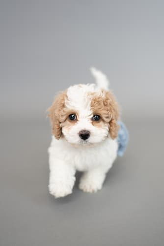
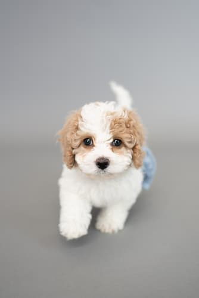

Poodle
 

Poodles come in three size varieties.
Standards should be more than 15 inches tall at the shoulder; Miniatures are 15 inches or under; Toys stand no more than 10 inches. All three varieties have the same build and proportions. At dog shows, Poodles are usually seen in the elaborate Continental Clip. Most pet owners prefer the simpler Sporting Clip, in which the coat is shorn to follow the outline of the squarely built, smoothly muscled body. Forget those old stereotypes of Poodles as sissy dogs. Poodles are eager, athletic, and wickedly smart “real dogs” of remarkable versatility. The Standard, with his greater size and strength, is the best all-around athlete of the family, but all Poodles can be trained with great success.
Traits
- Affectionate with Family
- Good with Young Children
- Somewhat Good with Other Dogs
- Low Shedding Level
| Poodle Type | Weight | Size |
|---|---|---|
| Standard | 45 - 80lb | 20 - 23" tall |
| Miniature | 14 - 18lb | 11 - 16" tall |
| Toy | 6 - 9lb | 8 - 9" tall |